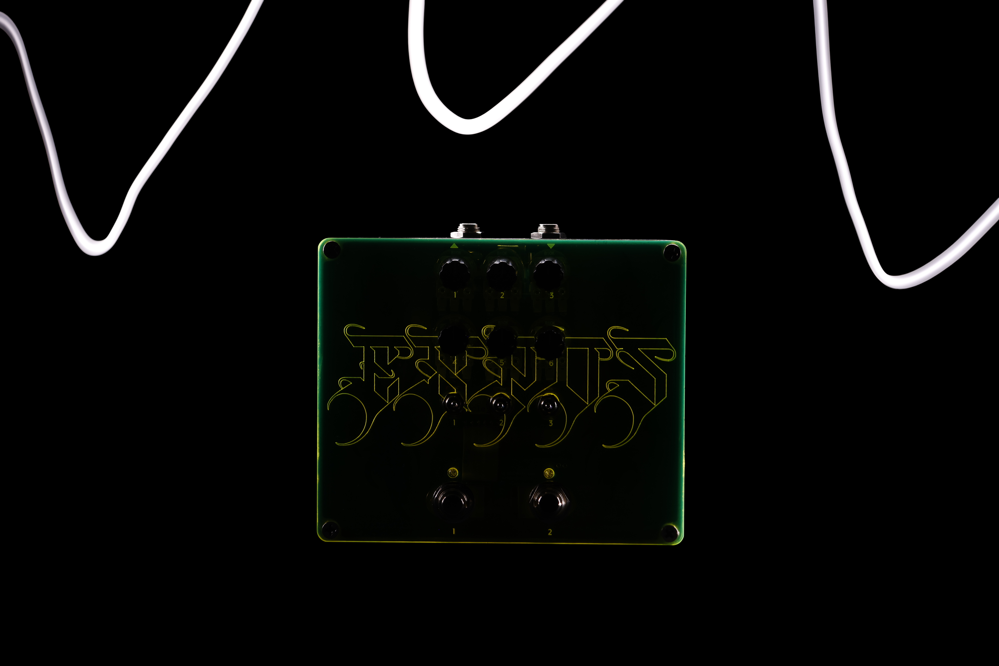
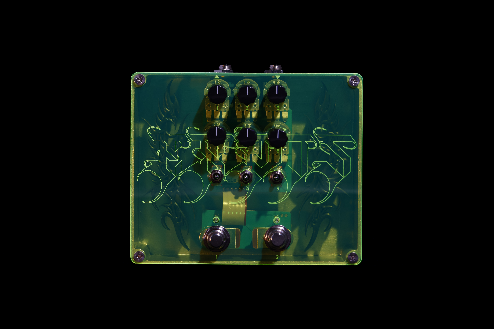
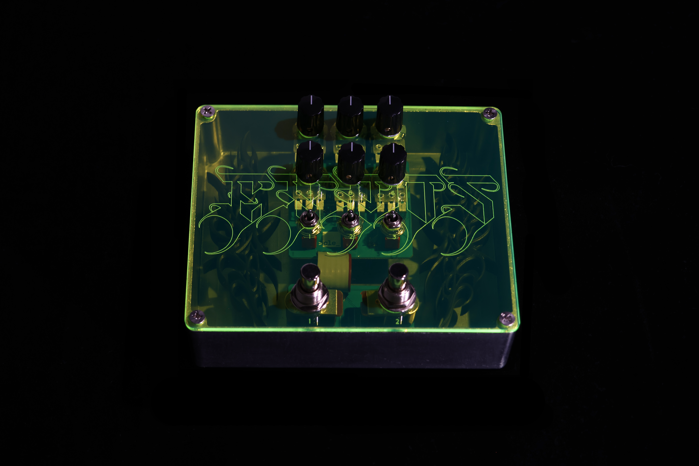
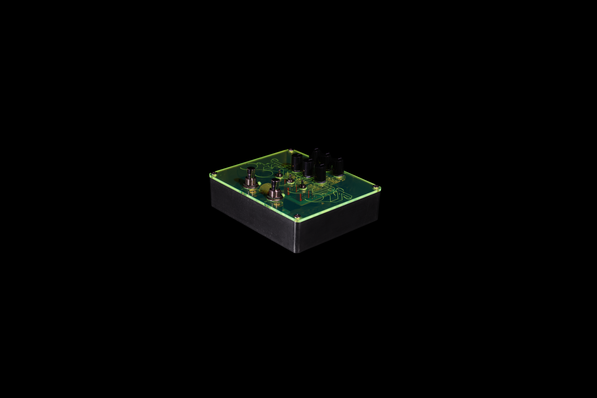

Multi-Effect Performance Pedal
// What is EXPOS
EXPOS is a digital multi-effect audio processor designed for live performance and experimental sound manipulation. The device combines multiple time-based and modulation effects: Reverb, Dub Echo, Flanger, and Vinyl Brake, inside a single hardware unit, processing stereo audio in real time.
Instead of screens or menus, EXPOS gives performers direct tactile control: six knobs, two toggle switches, and a DJ-style filter that sculpts the frequency spectrum post-effect.


// The device
The interface is designed for immediate control during a performance, no screens, no menus. Each of the six knobs maps to a different parameter depending on the active effect.
// DJ filter — Knob 5
Centre position is neutral. Turning left engages a low-pass filter, sweeping from 20kHz down to 300Hz for progressively darker tones. Turning right engages a high-pass filter, sweeping from 20Hz up to 4kHz for thinner, more aggressive textures. Applied post-effect.

// Performance
Effects switch instantly via the left toggle switch. The right toggle switch bypasses processing entirely, passing clean dry signal through. Parameters shape continuously. There is no latency between intention and sound.

// Effects
Simulates acoustic reflections within a physical space. The feedback path is filtered to give each repeat a slightly darker character. Ranges from tight room ambience to long, expansive decays.
// Knob mapping
Waveform simulation
// Signal path
Input → ReverbSc algorithm → LP filter in feedback path → Wet gain → Mix with dry → DJ filter → Output
Feedback range: 0.25 – 0.92
LP frequency: 1.2kHz – 18kHz
Input gain: 0.7× – 1.8×
Wet gain: 0.7× – 1.5×
A tape-style delay with a one-pole lowpass filter in the feedback path — each repeat becomes slightly darker. At high feedback values the delay enters self-oscillation, building into dense, evolving textures.
// Knob mapping
Echo repeat simulation
// Signal path
Input → Drive → Delay line → 1-pole LP in feedback → Mix with dry → DJ filter → Output
Delay time: ~6ms – 2s
Feedback: 0.20 – 0.97 (self-oscillation at high end)
Drive: 0.8× – 1.6×
Tone: bright → dark repeats
A short delay line modulated by an LFO creates moving comb-filter patterns. The feedback path adds resonance and metallic texture. Base delay and modulation depth are independently controllable.
// Knob mapping
LFO modulation simulation
// Signal path
Input → Delay line (LFO-modulated) → Add delayed to dry → Feedback → Mix → DJ filter → Output
LFO rate: 0.05Hz – 2.5Hz
Mod depth: 2 – 30 samples
Feedback: 0.0 – 0.6
Base delay: 2 – 12 samples
Records audio into a circular buffer and reads back at a variable speed. A slew-rate-limited speed control creates smooth deceleration or acceleration. Wow and flutter add organic pitch instability typical of degraded tape or worn vinyl.
// Knob mapping
Pitch-time distortion simulation
// Signal path
Input → Circular buffer write → Variable-speed read (linear interp) → Wow/flutter modulation → Output gain → Mix → DJ filter → Output
Target speed: 0× (stop) – 2× (double)
Slew: slow cinematic – abrupt stop
Flutter: 3Hz @ 0–2.5% depth
Output gain: 0.8× – 1.2×